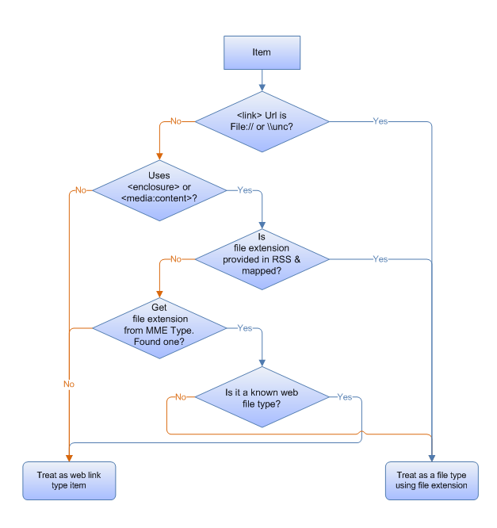

Explains how to enable your data store to be accessed by an OpenSearch web service, and how to avoid potential barriers for doing so.
This topic is organized as follows:
The OpenSearch web service you create on your web server must fulfill the following two requirements:
Be able to accept a GET URL query from the client.
Permit the search terms to be embedded in the URL.
The following example shows how a search term can be embedded in a URL.
https://example.com/search.aspx?query=terms¶m=mysearchword
[!Note]
Federated search does not support sendingPOSTrequests to a web service.
Â
For more information about constructing a URL, see "URL Template Parameters" in Creating an OpenSearch Description File in Windows Federated Search.
There is no specific query syntax expected in Windows 7. The OpenSearch provider accepts whatever terms the user enters in the input box in Windows Explorer, and encodes it into the URL. It does so according to the URL template described in "URL Template Parameters" in Creating an OpenSearch Description File in Windows Federated Search.
Users expect that separate terms are treated as implicitly ANDed together. For example, a query for "Microsoft Windows" should return only results that contain both "Windows" and "Microsoft".
Windows Federated Search supports Windows-based authentication, and can provide credentials to web services via the following protocols:
The OpenSearch provider is responsible for mapping the XML element values to Windows Shell system properties that can be used by Windows applications. But you are not limited to the default mappings of standard RSS or Atom elements, and can include custom XML elements in the Windows namespace for each of the properties. For example, you can add your own custom XML elements within the item element to provide additional metadata to Windows. You can also map elements from other XML namespaces, such as iTunes
The following example RSS feed output returns one item.
<rss version="2.0" xmlns:media="https://search.yahoo.com/mrss/" xmlns:example="https://example.com/namespace">
<channel>
<title>Search Results</title>
<item>
<title>An example result</title>
<link>https://example.com/pictures.aspx?id=01</link>
<description>This is a test of the emergency search results system. If this were a real emergency result, you'd be reading something more useful.</description>
<pubDate>Wed, 1 Oct 2008 23:12:00 GMT</pubDate>
<media:content url="https://example.com/pictures/picture01.jpg" fileSize="212889" type="image/jpeg" height="768" width="1024"/>
<media:thumbnail url="https://example.com/thumbnails/picture01.jpg" height="120" width="160"/>
<example:dateTaken>Mon, 22 Sep 2008 23:12:00 GMT</example:dateTaken>
</item>
</channel>
</rss>
For more detailed information about property mapping, see the "Extended Elements in WIndows Federated Search" and "Custom Property Mappings" sections in Creating an OpenSearch Description File in Windows Federated Search.
Within the items in your RSS feed, you can choose to include other XML elements that automatically map to Windows Shell system properties. To do so, include an element named after the Windows Shell property and prefixed with the Windows Shell system namespace. The following example illustrates the namespace declaration win=" http://schemas.microsoft.com/windows/2008/propertynamespace" and the inclusion of an element for the property mapping win:System.Contact.PrimaryEmailAddress:
<rss version="2.0" xmlns:example="https://example.com/schema/2009" xmlns:win="http://schemas.microsoft.com/windows/2008/propertynamespace">
...
<item>
<title>Someone</title>
<win:System.Contact.PrimaryEmailAddress>someone@example.com
</win:System.Contact.PrimaryEmailAddress>
</item>
The namespace prefix used here ("win") is a suggestion; you can use any prefix. However, you must use the exact Windows Shell property names, and must include the exact Uniform Resource Identifier (URI), as shown in the following example:
http://schemas.microsoft.com/windows/2008/propertynamespace
About Windows Shell System Properties
Windows defines a complete list of System Properties and the value type format required for each property. The documentation for the System.FileExtension Window Shell property, for example, specifies that the value must contain the leading dot (".docx" and not "docx").
Date and Time Values
The preferred date and time format is ISO-8601, as shown in the following example:
2008-01-16T 19:20:30:.45+01:00
.NET developers should use the DateTime class with ToString("R") to output the correct format.
For more detailed information about property mapping, see "Extended Elements in Windows Federated Search" in Creating an OpenSearch Description File in Windows Federated Search.
Searching within the Windows Explorer UI permits users to treat results as files when an RSS item points to a file stored remotely. The user can drag and drop items to the desktop, and the Windows Explorer UI displays the correct icon and provides the appropriate shortcut menu. If the RSS item does not point to a remotely stored file, the file is treated as a link, and users can perform actions on it such as creating a shortcut or opening it in the browser.
The following flowchart shows how Windows determines an item's file type.

The OpenSearch provider performs the following steps to map an item to a file type:
For example, if the item has a link URL that uses a file system path (such as file:///\\server\share\etc\item.ext), the OpenSearch provider treats the link as a file and determines the type by the file name extension used in the path (.ext in this example).
If the item uses the standard RSS enclosure or MediaRSS media:content element, the OpenSearch provider assumes that the item is a file and identifies the file name extension as follows:
MIMEType string, such as "image/jpeg". If the MIMEType is associated with a file name extension that is registered on the client computer, the item is regarded as a file of that type. If the MIMEType is not associated with a file name extension registered on the client computer, the item is treated as a web link type. The OpenSearch provider does not attempt to parse the Url attribute to locate the file name extension.MIMEType is associated with a file name extension that is registered on the client computer, the provider determines whether the file name extension is a known web file type (.htm, .html, .asp, .aspx, .php, .swf, .stm). If so, the file type is regarded as a web link type; otherwise, it is regarded as a file type. For example, if the MIMEType "text/html" is associated with the .htm file name extension, that item is regarded as a web link instead of as an .htm file type.Some data stores do not provide an OpenSearch-compatible web service but can still be connected to Windows Federated Search. Such data stores include:
Remote indexes with authentication methods that are not supported in Windows 7 Federated Search.
Examples include forms-based authentication and other custom authentication methods.
If a high-value public store has public web APIs, anyone can write another web service that is OpenSearch-compatible and calls those APIs behind the scenes.
Examples include the Library of Congress, and medical research databases.
Proprietary enterprise data stores or indexes, and legacy content management stores, for which it might be impossible to implement a front end.
However, there are alternatives that can avoid barriers to enabling a data store. The following are some of those alternatives:
To write a middle-man web service when you cannot modify the web service for the existing data source, or the web service provides a custom API:
To use an existing search engine when you cannot enable a public data store:
Use a public search engine that already supports OpenSearch with RSS. You can do so by providing your users with an .osdx file that has a URL template that restricts results to only those for your specific domain.
See the following example of an OpenSearch description for searching only the Help content for Windows by using a query against live.com.
<?xml version="1.0" encoding="UTF-8"?>
<OpenSearchDescription xmlns="https://a9.com/-/spec/opensearch/1.1/">
<ShortName>Windows Help</ShortName>
<Description>Search Windows Help using the live.com search engine</Description>
<Language></Language>
<Url type="text/html" template="https://windowshelp.microsoft.com/windows/search.aspx?=&qu={searchTerms}"/>
<Url type="application/rss+xml" template="https://api.search.live.com/rss.aspx?source=web&query={searchTerms} site:windowshelp.microsoft.com&web.count=50"/>
</OpenSearchDescription>
To use an existing indexing server that supports OpenSearch when you cannot enable proprietary enterprise data stores or indexes:
To write a client-side data store if a server-side-only solution does not work:
[!Note]
Opening an .osdx file creates a .searchconnector-ms file (search connector) in the %userprofile%/searches directory and places a link to it in the %userprofile%/links directory.
Â
For additional information about implementing search federation to remote data stores using OpenSearch technologies in Windows 7 and later, see "Additional Resources" at Federated Search in Windows.
Getting Started with Federated Search in Windows
Connecting Your web Service in Windows Federated Search
Creating an OpenSearch Description File in Windows Federated Search
Following Best Practices in Windows Federated Search
Deploying Search Connectors in Windows Federated Search
Â
Â